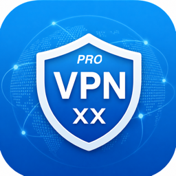

VPN XX · iOS 1.0.8
VPN XX iOS 1.0.8 是含广告的订阅与节点配置管理工具。该已发布版本只接受用户提供的配置和 URL，不含预设网络订阅源。它用于整理、检测和分享配置记录，不建立系统 VPN 隧道，也不提供 VPN 流量服务。

订阅与节点管理器
VPN XX iOS 1.0.8：用户自行导入，含广告。PRO iOS 1.0.7 / Mac 1.0.1：无广告，支持自行导入及预设第三方网络来源导入。两者均管理配置，不建立 VPN 隧道。

订阅 · 节点 · 设置
解析 VMess、VLESS、Trojan、Shadowsocks、SSR、Hysteria、TUIC、WireGuard、SOCKS、HTTP 等常见代理和订阅格式。
按协议或状态筛选、收藏节点、按延迟排序、分享节点详情并刷新订阅。
VPN XX 免费版可通过 Yandex Smart Waterfall 展示 Yandex Mobile Ads，并在 Yandex 后台把 Google AdMob 配置为调解需求方。免费构建可在列表浏览、导入、刷新、复制、分享和测速流程周边使用底部 Banner、开屏、插屏和原生信息流广告位。VPN XX Pro 是付费下载版本，无广告，也不会初始化广告 SDK。
官网说明更新于 2026 年 9 月 12 日
VPN XX iOS 1.0.8 是含广告的订阅与节点配置管理工具。该已发布版本只接受用户提供的配置和 URL，不含预设网络订阅源。它用于整理、检测和分享配置记录，不建立系统 VPN 隧道，也不提供 VPN 流量服务。
VPN XX PRO iOS 1.0.7 与 Mac 1.0.1 是付费无广告配置管理工具。这两个已发布版本均包含“网络来源”：用户可选择托管在 GitHub 上的第三方公开订阅来源，导入返回的节点记录，同时也支持自行导入。公开来源并非开发者自有服务器，其内容可能变化。App 本身不建立系统 VPN 隧道。
计划在后续替代版本中移除预设公开来源，保留用户自行导入。这是未来变更：更新官网不会移除设备上已安装的 PRO iOS 1.0.7 或 Mac 1.0.1 中的该功能。目前未公布替代版本发布或恢复上架日期。
官网说明更新于 2026 年 9 月 12 日
导入或刷新 URL 时，App 会向该来源发起请求；节点延迟和可达性检测会连接相应端点。VPN XX PRO iOS 1.0.7 与 Mac 1.0.1 使用“网络来源”功能时，还会访问 raw.githubusercontent.com 上的公开订阅源。来源运营方会收到 IP 地址、HTTP 元数据等网络请求信息。导入记录可保存在本机，并在启用时通过私人 iCloud 同步。VPN XX iOS 1.0.8 不含预设来源目录。
VPN XX 免费版的广告 SDK 可能处理用于广告投放、衡量、反作弊、安全、同意管理和合规的数据，包括在允许时的广告标识符、由 IP 推断的大致位置、设备与 App 信息、广告互动和诊断信息。Pro 版不初始化广告 SDK；订阅链接和节点可在你启用时通过 iCloud 同步。